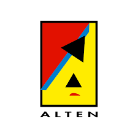
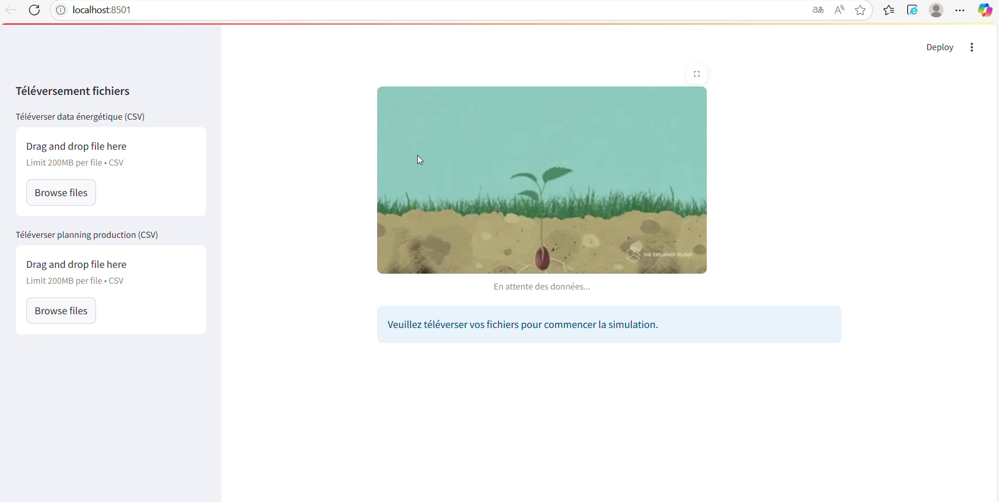
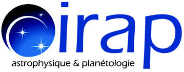
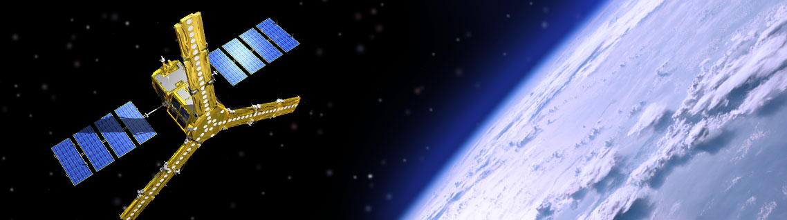
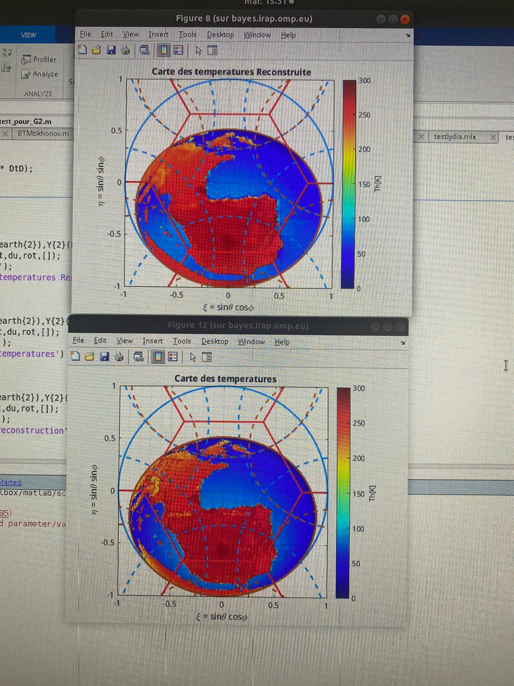

Lydia Bouaoudia
Ingénieure en Machine Learning & Computer Vision
📍 Mobile dans toute la France
📧 bouaoudialydiia@gmail.com
📞 +33 7 69 40 31 88
🔗 LinkedIn
À propos de moi
Je suis jeune diplômée en traitement du signal, traitement d’image et machine learning, avec une forte appétence pour l’intelligence artificielle appliquée à des systèmes complexes et réels.
Je m’intéresse particulièrement à la R&D en IA, notamment à la conception de modèles capables de prendre des décisions, apprendre à partir de données hétérogènes et s’adapter à des environnements contraints comme l’industrie, l’énergie ou la vision par ordinateur.
J’aime travailler à l’interface entre la modélisation mathématique, l’algorithmique et l’expérimentation, où chaque idée doit être testée, optimisée et confrontée à des données réelles.
En parallèle de mes compétences techniques, je développe un fort intérêt pour la gestion de projet, en particulier dans des contextes collaboratifs et pluridisciplinaires.
Expérience professionnelle

Alten – Ingénieure stagiaire en IA pour l’optimisation énergétique (Projet Green Factory)
Contexte :
Ce stage s’inscrit dans le projet Green Factory, visant à réduire l’empreinte carbone des sites industriels en combinant intelligence artificielle, énergies renouvelables et optimisation énergétique.
L’objectif était de concevoir un système capable d’optimiser en temps réel :
- l’utilisation des sources d’énergie (réseau, renouvelables, stockage)
- et le planning de production des machines de l'usine
Résultats clés du projet
- Réalisation d’un état de l’art complet
- Développement des premiers prototypes
- Validation du projet dans le cadre du Crédit d’Impôt Recherche (note A)
Ce que j’ai développé
- Conception d’un agent d’apprentissage par renforcement basé sur l’algorithme PPO
- Développement d’un environnement simulé d’usine avec Gymnasium
- Intégration de modèles prédictifs de type LSTM
- Mise en place d’un système hybride IA + règles expertes
- Développement d’une interface avec Streamlit
Démo
⚠️ Confidentialité : démonstration partielle uniquement

Voir les détails techniques
Architecture du système
- Simulation d'une usine réaliste sous Python
- Données réelles + données simulées
- Algorithme PPO
- TensorBoard pour suivi des performances
- Interface Streamlit
Démarche expérimentale
- Simulation (données synthétiques)
- Données réelles + règles
- Modèle hybride RL + règles expertes

IRAP – Traitement d’images spatiales
Contexte du projet
Traitement de données issues du satellite SMOS, dédié à l’observation de l’humidité des sols et de la salinité des océans.

Objectifs scientifiques
- Reconstruction des températures de brillance
- Amélioration des contours Terre-Mer
- Réduction du repliement spatial (aliasing)
- Stabilisation par optimisation
Méthodes développées
- Problème inverse régularisé
- Optimisation sous contraintes
- Correction des effets d’aliasing
Résultats

Outils utilisés
- MATLAB
- LaTeX
- Traitement d’image
- Problèmes inverses
- Optimisation
Développement d’une application de traitement d’images (Projet M2)
Contexte du projet
Dans le cadre du Master 2 Signal, Image et Apprentissage Automatique, développement d’une application complète en C++ dédiée à la gestion et au traitement d’une bibliothèque d’images.
L’objectif était de concevoir un système permettant :
- la gestion structurée d’images et de leurs descripteurs
- l’application de traitements d’image avancés
- l’interaction via une interface graphique utilisateur
Fonctionnalités principales
- Gestion d’une bibliothèque d’images (création, modification, suppression, affichage, tri)
- Application de traitements d’image :
- filtrage (convolution)
- détection de contours
- segmentation
- Visualisation des résultats en temps réel
- Sauvegarde et chargement de bibliothèques d’images
- Système d’authentification avec gestion des droits d’accès utilisateurs
Ce que j’ai développé
- Implémentation d’algorithmes de traitement d’image (filtres, contours, segmentation)
- Développement d’une interface graphique avec Qt
- Intégration de traitements modulaires pour faciliter l’extension de l’application
- Mise en place d’un système de gestion des utilisateurs et des droits d’accès
- Structuration du code pour garantir maintenabilité et évolutivité
Architecture et contraintes
- Développement en C++ avec interface Qt Creator
- Utilisation de OpenCV pour l’affichage des images
- Conception modulaire pour permettre l’ajout de nouveaux traitements
- Respect des bonnes pratiques de développement (code propre, sans warnings, documentation)
Gestion de projet
- Travail en équipe avec répartition des tâches
- Utilisation de GitHub pour le versioning et le suivi du projet
- Communication via Discord et réunions régulières
- Planification avec diagramme de Gantt et gestion des risques
Résultat
- Application C++ fonctionnelle intégrant :
- une bibliothèque d’images complète
- des traitements d’image avancés
- une interface utilisateur interactive
- Documentation technique générée avec Doxygen
Outils utilisés
- C++
- Qt / Qt Creator
- Traitement d’image
- OpenCV
- Doxygen
- GitHub
- gestion de projet
Contact
📧 bouaoudialydiia@gmail.com
🔗 LinkedIn